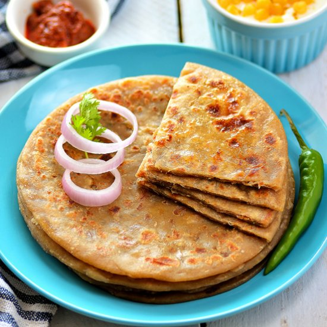

Aloo Paratha

Description
Aloo Paratha is a delicious shallow fried Indian stuffed bread popular among all generations of people across length and breadth of India. Contrary to popular belief, Punjabi aloo paratha can be easily prepared at home as this recipe uses ingredients that are found in every Indian kitchen. Plus, the detailed instructions with step by step photos will make it a breeze to cook like an expert.
Ingredients
- 1 cup + 1/2 cup Wheat Flour
- 2 medium Potatoes, boiled and peeled
- 4 tablespoons finely chopped Coriander Leaves
- 1 teaspoon Lemon Juice
- 1 teaspoon Sugar
- 2 Green Chilli, finely chopped
- 1/4 teaspoon Garam Masala Powder
- 1 teaspoon Red Chilli Powder
- 1 teaspoon grated Ginger
- 2 tablespoons Oil
- Butter, for serving
- Salt to taste
- Water, as needed
Steps
- First prepare dough by taking 1 cup wheat flour, 1 teaspoon oil and salt in a small bowl. Incrementally add water in small quantities and knead smooth and soft dough (like chapati dough). Grease its surface with 1/2 teaspoon oil, cover it with clean muslin cloth and set aside for 15-20 minutes to settle at room temperature.
- Now, prepare alu paratha stuffing. Take the boiled potatoes in a medium bowl and mash it until no chunks of potato. Add chopped green chillies, red chilli powder, grated ginger, garam masala powder, sugar, lemon juice and salt. Mix all ingredients properly.
- Divide stuffing into 6 equal parts and give them a shape of ball. Divide prepared dough into 6 equal parts, give them a round shape and press a little to flatten like pattie.
- Take 1/2 cup dry wheat flour in a small plate for dusting. Take one dough pattie and coat it with dry wheat flour on both sides. (It will prevent dough from sticking to rolling board). Put it on rolling board/roti making board (chakla) and roll it out into a circle of approx. 4-5 inch diameter using rolling pin. Put one portion of stuffing in the center of it.
- Wrap stuffing ball by lifting all sides of rolled circle towards top, seal the edges and again give it a round ball shape.
- Gently press stuffed ball on rolling board and dust some dry flour over it.
- Roll it out into circle of 6-7 inch diameter (like roti or chapati). Do not make it very thin by pressing it too much.
- Place it on a hot tava/griddle and cook over medium flame. When tiny bubbles starts to rise on the surface, flip it and reduce flame to low.
- Spread 1/2 teaspoon oil around its edge with the help of spatula and cook for approx 30-40 seconds.
- Flip it again and spread 1/2 teaspoon oil around its edge. Press it with spatula and cook for 30-40 seconds over medium flame. Repeat flip and press process until golden brown spots appear on both sides of paratha. (No need to spread oil after doing it once in previous steps).
- Transfer it to a plate and spread butter on it. Prepare remaining aloo parathas by following same process. Serve it with tomato raita and pickle.